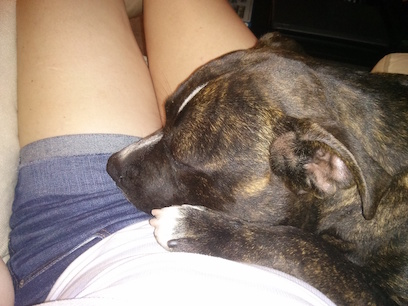

FAVORITES: Crafts || Cooking || Pit Bulls

One time I found a stray dog and he was awesome so we fostered him.
Stuff I like
- I like to make stuff out of yarn.
- I like to foster cool pit bulls and find them fantastic, loving homes.
- I like to cook.
- I like to bake.
- I like making lists.
Click here to get back to the main page, and here to check out some stuff about my education.